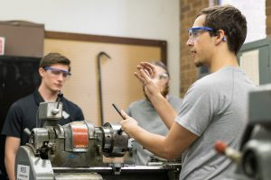

TA Experience
The chart on the right displays my up to date experience as a physics
Teaching Assistant. Typically i serve as grader/classroom assistant for the
lecture courses and sole instructor for the lab and recitation courses.
Machine Shop Classes
During my undergraduate degree, I offered other undergraduate students at
UCF a unique opportunity to get first-hand experience in the physics
department machine shop (where i had previously worked in as machinist
apprentice for 2 years).
